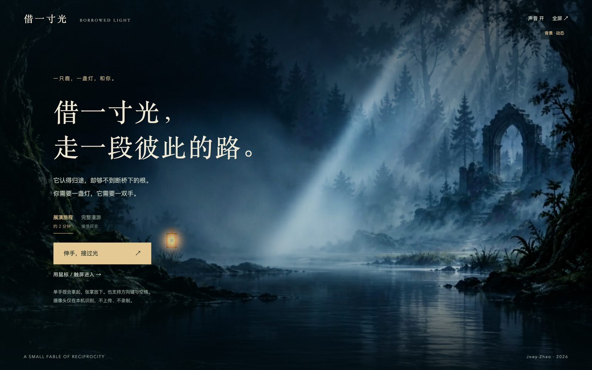
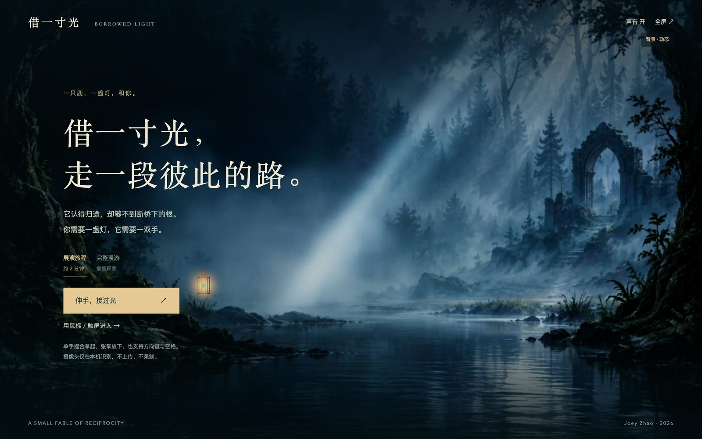
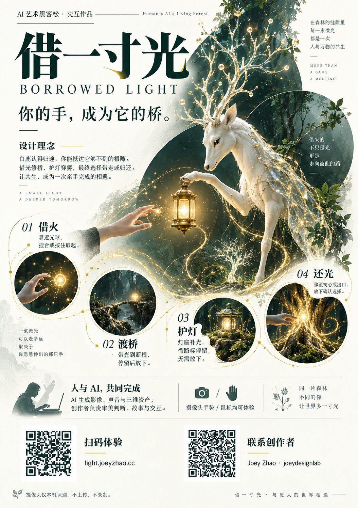
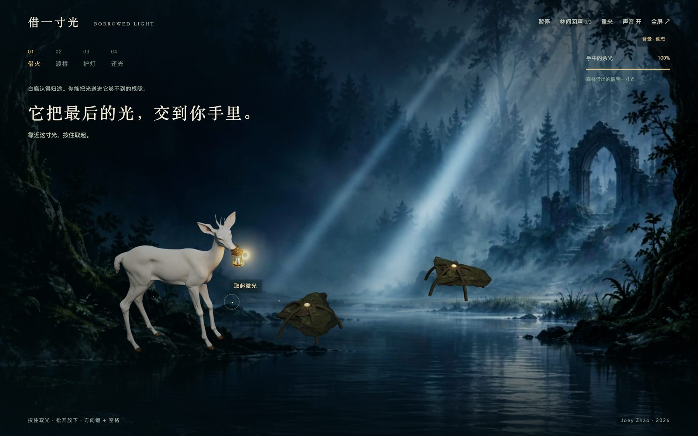
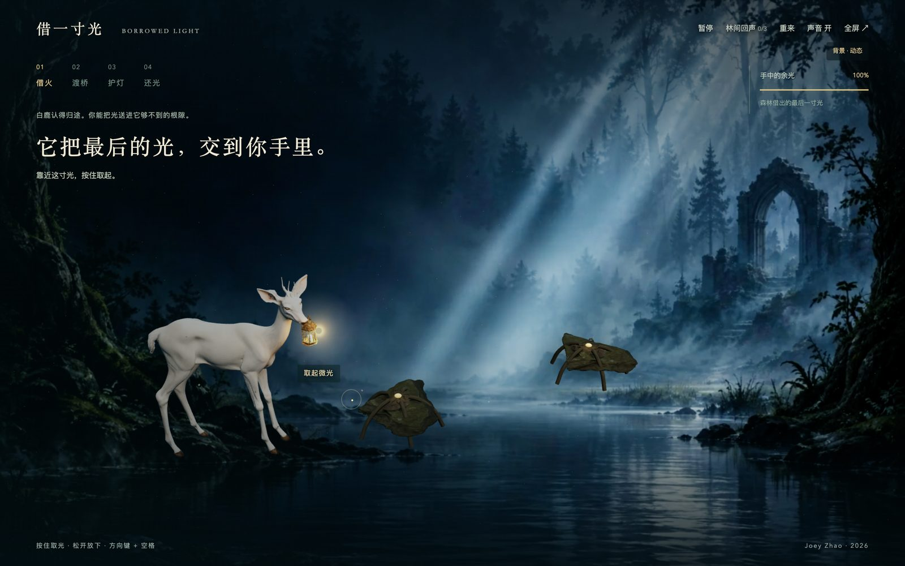
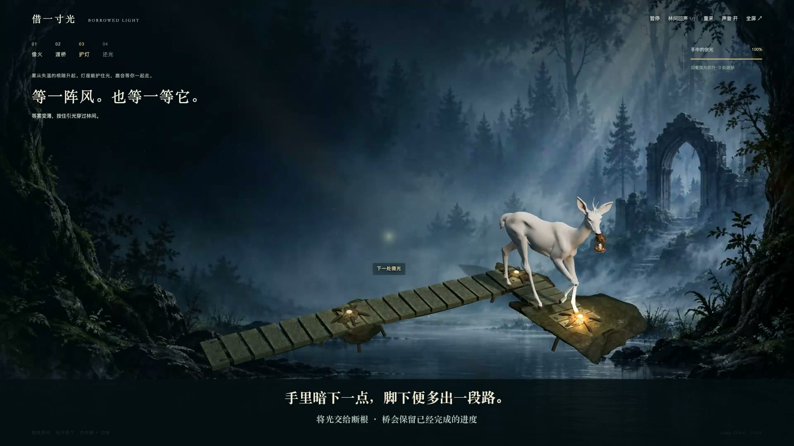
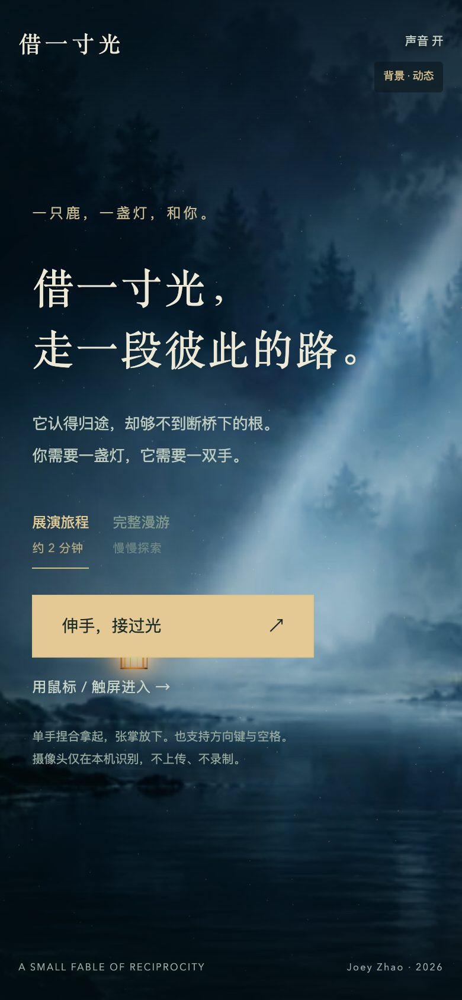

Gesture Web Game & AI Short Film · 2026 · Three.js + MediaPipe
A tiny web tale about borrowing light — and giving it back.
By day I design AI products. Every roadmap I touch optimizes for the same verb: take. Take attention, take time-on-app, take one more click. We're all extremely good at borrowing.
Somewhere in another late-night crunch, I caught myself wanting to make the opposite — a thing whose only mechanic is giving back. No KPIs, no analytics events, no retention graph. One deer, one lamp, and a hand reaching toward a camera.
So this is a side project in the strictest sense: it earns nothing, converts nothing, and I'm weirdly proud of that.

The landing screen: one deer, one lamp, and you.
I wrote the lore more seriously than anything I've shipped at work. In this forest, light is grown, not owned: by day the leaves bank sunlight for the roots; by night the roots send the leftover glow into lampposts along the old road. A white deer walks the circuit — carrying light from far posts back to the heart-tree, carrying fresh light out again.
No lamp can stay lit alone, forever.
There used to be a keeper who walked this road with the deer. The deer knew the way through fog; the keeper could reach the narrow root-cracks under the bridge where hooves can't. Then the keeper left. The last notch is still carved in the bridge — but the footsteps of returning never came back. The bridge broke. The mist rose.
Tonight you're the one who's lost in the woods. The deer's lamp holds its last inch of light. It brings the lamp close to your hand, then turns and waits. It knows the way home. It also knows it can't get there alone.

Key art: the deer, the lamp, and the mist that isn't malicious — only cold.
The one design decision I refused to negotiate: no buttons for the core action. Close your hand into a pinch — you've taken the light. Open your palm — you've given it away. "Borrow" and "return" stop being keystrokes and become the actual physics of your hand.
Hand tracking runs on MediaPipe HandLandmarker, entirely in the browser. Before every demo I say the same sentence first: the camera frames never leave your machine. Nothing uploaded, nothing recorded. A game about returning things shouldn't be quietly taking yours.
Getting pinch-vs-open to feel right was the real fight. Threshold too loose and the light flickers out of your grip; too tight and first-timers pinch until their hand cramps with no result. Dim bedrooms drown webcams in noise. Hands drift out of frame. Every fallback matters — mouse, touch, arrow keys + spacebar all work, and the story doesn't change with the input.

In-game: the deer hands over its last light. Hold to take it — the HUD teaches the gesture right where you need it.
Most games train you to collect, pick up, buy, conquer. Here, every step forward costs light you're holding — and the only way forward is to set it down somewhere that isn't yours.

The mist has no malice — it's only cold. Route through lampposts, root-bridges and fog markers, on a budget of borrowed light.
At the exit, the game asks one quiet question: the way out is here — but where does the light go home? I deliberately refused to grade the answer.
In one ending the lamp is in your hand. In the other, the road is under your feet.
No "Good Ending" stamp, no achievement jingle for the virtuous path. Players who kept the lamp aren't wrong — the deer isn't angry, the forest doesn't curse them. The difference is quiet, the way real ones are.
The game was done. The "return the light" ending was thirty seconds of procedural animation — roots glowing, leaves unfolding — and I watched it loop maybe forty times that night. Somewhere around the twentieth loop it hit me: this ending deserved to be seen, not just played. I wanted the forest to breathe like a real film. That thought cost me the rest of my month.
So began the part nobody warns you about. Three minutes of the deer's story, every shot coaxed out of generative video models, one prompt at a time. It sounds like magic. It is not. The deer's antlers changed shape between shots. The lamp's glow drifted from honey to neon. Fog rolled in where nobody asked for fog. I re-rolled shots until sunrise, kept maybe one in ten, and slowly learned to prompt like a cinematographer — lens language, camera moves, the color temperature of longing. The film quietly consumed four times the effort of the game itself. When people ask what this project is, I say "a web game." The honest answer: a film that happens to have a game attached.
The game lets you return the light. The film shows you what the forest does with it.
What came out the other side is a three-minute tale in four movements — black frames between chapters, the same rhythm as the game. It opens in near-darkness with one warm violet spark. The journey passes through blue mist and lampposts. And at the hundredth second — I timed it — the palette finally turns green: roots lighting, leaves unfolding, the light going home. Scored start to finish, with no hard cuts — only slow dissolves, like the fog deciding what to show you next.
The three-minute short — every frame generated, re-rolled and graded by one person at 2 a.m.

Still, 00:55 — blue mist, and the last lamppost before the bridge.
A browser, a camera, and nothing else. The whole forest renders procedurally — not a single texture file ships with the game.

Same tale, smaller screen — the forest fits in one hand, like the light.